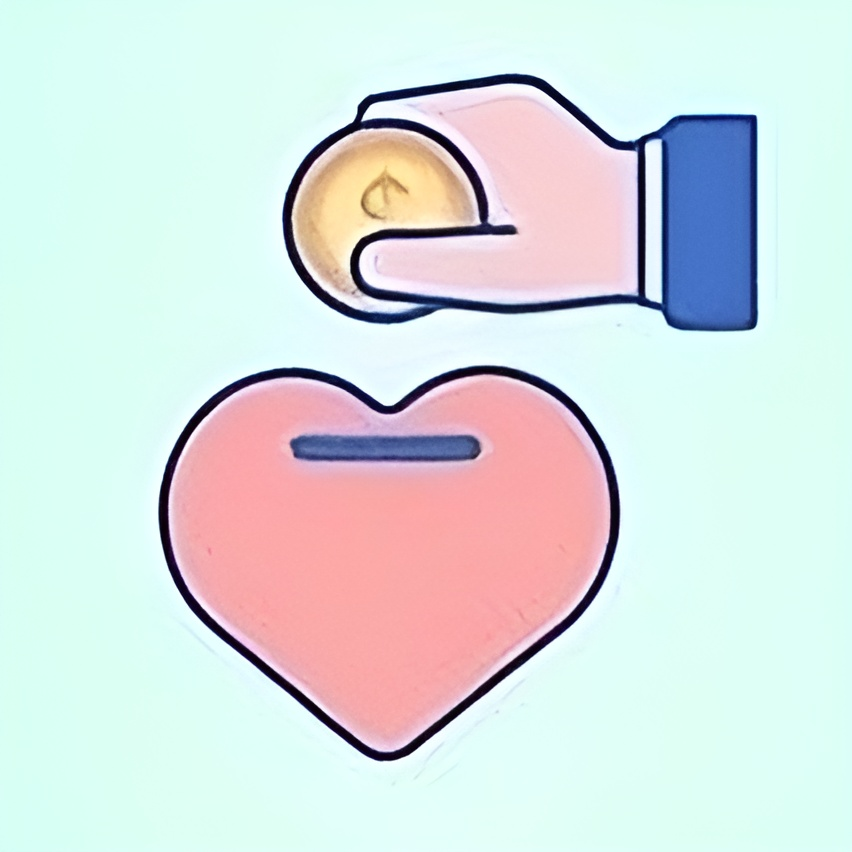

About Us
Hey! I am David, one of the co-founders of Happy Help! I was actually the one that pitched the idea at one of our fiserv meetings, so I find it really cool that we have turned it into an actual website! I am in 7th grade, just like Clarke and Shaas, and I love trying out new things! I was the one that made the concept art and the chatbot for Happy Help. I am so grateful that I made this because of the opportunities that Fiserv has presented me by letting me into their Future FinTechies program! If you have any concerns or questions, feel free to contact me via email, at davidzea@amanaacademy.org!
Hello! I am Shaas, co-founder of Happy Help, and I am deeply passionate about coding websites, apps, and games, despite being in 7th grade. Crafting the website you are exploring has been a fulfilling experience, and my time at Fiserv has provided invaluable insights into the professional workflows of software engineering. For me, coding is more than just a hobby; it is a form of self-expression and a way to bring innovative ideas to life. As I look ahead, I am excited to delve deeper into coding, explore cutting-edge technologies, and continue expanding my skills. If you are ever interested in discussing tech or have questions, do not hesitate to reach out to me at Shaaswatanraghuprakash@amanaacademy.org. Let us connect and collaborate to drive innovation forward!
Hey there! I'm Clarke, one of the co-founders behind Happy Help, a platform dedicated to making a real difference. Witnessing our idea blossom from a pitch to a fully functional website has been an incredibly surreal journey. In 7th grade, alongside David and Shaas, I've been immersed in the thrill of concepts. My job for this website was to come up with a logo and innovate ways to help others such as mental health care that many people don’t have. The opportunity to participate in Fiserv's Future FinTechies program has been nothing short of transformative, opening doors to endless possibilities. If you would like to contact me, you can at, clarkebradley@amanaacademy.org!

Products And Services
At Happy Help, we're passionate about empowering you to live your best life, both online and offline. Our innovative VPN service not only ensures your online activities remain private and secure but also unlocks a world of possibilities by bypassing geo-restrictions and censorship. With our Mental Health Therapy services, our dedicated team of professionals provides compassionate support and evidence-based interventions to help you navigate life's challenges and cultivate resilience. Furthermore, our cutting-edge Malware + Antivirus Detection software provides proactive protection against cyber threats, keeping your devices and personal information safe from harm. We take pride in developing solutions that not only prioritize your happiness but also enhance your digital well-being and mental health. At Happy Help, we're more than just a service provider; we're your steadfast ally in achieving a happier, healthier, and safer life. Trust Happy Help, where we're always eager to go above and beyond to assist you!
Learn MoreFundraisers
Welcome to our donation section, where you have the opportunity to contribute to fundraisers aimed at spreading happiness to those in need. Your generosity fuels our mission as we allocate the funds received to support a diverse range of causes. From initiatives like The Sandwich Project, providing meals for the homeless, to organizations like Hope Atlanta, dedicated to assisting individuals facing homelessness, every donation you make has a direct impact on improving lives and fostering hope in our communities. Your support enables us to make a meaningful difference in the lives of those facing various challenges. By donating to our fundraisers, you join us in our commitment to creating positive change and uplifting those in need. Together, we can continue to spread happiness, offer assistance, and bring light to the lives of individuals and families across our communities. Thank you for your generosity and for beinga part of our mission to make the world a better place, one donation at a time.
Frequently Asked Questions
What is Happy Help?
Happy Help is a platform designed to connect people who want to make a difference with opportunities to support a wide range of causes. Whether you're passionate about environmental conservation, social justice, education, healthcare, or any other cause, HappyHelp provides a platform for you to get involved and contribute to meaningful projects and initiatives.
How does Happy Help work?
Happy Help partners with organizations and individuals who are leading initiatives aimed at creating positive change in the world. Through our platform, users can discover these projects, learn about their goals and impact, and contribute to fundraising efforts. From donating money to volunteering time and skills, there are many ways to get involved and support causes you care about through Happy Help.
What kinds of causes does Happy Help support?
Happy Help supports a diverse range of causes and initiatives, including but not limited to environmental conservation, humanitarian aid, animal welfare, healthcare, education, community development, and social justice. We believe in the power of collective action to address pressing issues and create a brighter future for all.
How can I get involved with Happy Help?
Getting involved with Happy Help is easy! Simply visit our platform to explore the various causes and projects seeking support. You can learn more about each initiative, donate funds, volunteer your time and skills, or even start your own fundraising campaign to support a cause that's close to your heart.
Is Happy Help a global platform?
Yes, HappyHelp is a global platform that welcomes users from all over the world to come together and make a difference. We believe that positive change knows no boundaries, and by connecting individuals and communities across the globe, we can amplify our impact and create lasting change on a global scale.
Is my donation secure on Happy Help?
Absolutely. HappyHelp takes the security of donations and personal information very seriously. We use industry-standard encryption and security measures to ensure that your transactions are safe and secure. Additionally, we work closely with trusted payment processors to process donations securely and efficiently.
Can I track the impact of my donations on Happy Help?
Yes, transparency and accountability are important values for us at Happy Help. We provide regular updates and reports on the progress and impact of the projects and initiatives supported through our platform. You can see how your donations are making a difference and track the positive change you're helping to create in the world.
How can organizations and individuals partner with Happy Help?
If you're leading a project or initiative that aligns with Happy Help's mission, we'd love to hear from you! Organizations and individuals can reach out to us to discuss potential partnership opportunities and how we can collaborate to amplify your impact and reach more people in need.
Is Happy Help only about fundraising, or do you offer other forms of support?
While fundraising is a key aspect of what we do, Happy Help is also committed to providing support and resources to individuals and communities in need. Whether it's raising awareness about important issues, connecting people with volunteering opportunities, or providing educational resources, we strive to support causes in diverse ways beyond just fundraising.
How can I stay updated on the latest news and initiatives from Happy Help?
To stay updated on the latest news, initiatives, and opportunities to get involved with Happy Help, be sure to follow us on social media and subscribe to our newsletter. You'll receive regular updates, inspiring stories, and information on how you can make a difference and spread happiness through your actions.
What is the most important goal you're trying to achieve?
Our most important goal we are trying to achieve is spreading education around the world. At Happy Help, we believe that education is a fundamental human right and a powerful tool for empowering individuals and communities to break the cycle of poverty, achieve their full potential, and create positive change in their lives and the world around them.